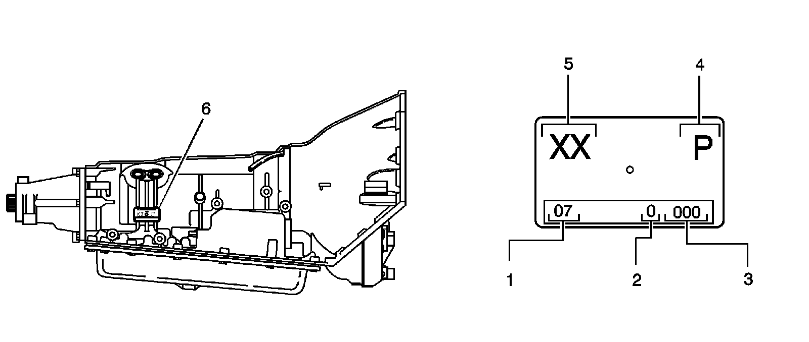
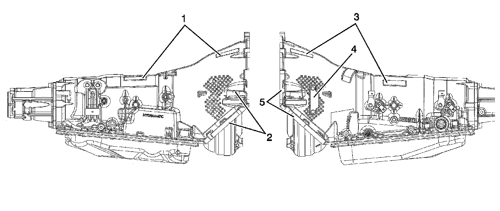

4L80-E/4L85-E Automatic Transmission
Transmission Identification Information
ID Tag Information

1 - Calendar Year
2 - Julian Date of the Year
3 - Shift and Line Number
4 - Plant
5 - Model
6 - Location on Transmission
VIN Locations
VIN Locations:

1 - Optional VIN Location
2 - Optional VIN Location
3 - Optional VIN Location
4 - Optional VIN Location
5 - Optional VIN Location